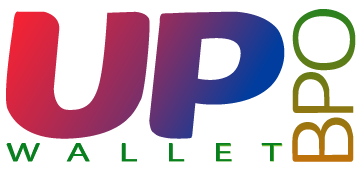

El término wallet hace referencia a una cartera, billetera o monedero virtual en el que podemos gestionar nuestros activos virtuales.
UP BPO se dedica al diseño, desarrollo y soporte de éstas billeteras virtuales.
PERO… QUE ES WALLET?
Es un software o hardware diseñado exclusivamente para almacenar y gestionar las claves públicas y claves privadas de nuestro dinero virtual.
La clave pública es similar a un número de cuenta bancaria. Podemos entregarla a cualquier persona para que nos envíe dinero, sin el riesgo de que pueda extraer nuestros fondos. A través de la clave pública se generan direcciones para recibir, consultar y ver el estado de nuestros fondos.
La clave privada funciona como una especie de llave, un PIN o contraseña que no debemos revelar a nadie, ya que nos otorga el derecho de gastar ese dinero virtual contenidas en una dirección. Así, el propietario de la clave privada será el propietario de los fondos y tendrá total control sobre ellos.
No necesitamos el permiso o autorización de ningún tercero para realizar una operación. Son monedas totalmente digitales que no existen en el mundo físico y que funcionan basándose en criptografía.

